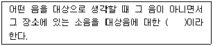
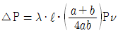
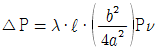
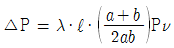
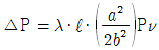

산업위생관리산업기사 (2002-05-26 기출문제)
1과목: 산업위생학 개론
1. 작업강도가 높은 근로자의 근육에 호기적 산화로 연소를 도와주는 영양소는?
- 비타민E
- 비타민A
- 비타민B1
- 비타민D
(정답률: 87%)

2. 피로의 증상으로 틀린 것은?
- 혈압은 초기에는 높아지나 피로가 진행되면 도리어 낮아진다.
- 체온은 높아지나 피로정도가 심해지면 도리어 낮아진다.
- 혈당치가 낮아지고 젖산과 탄산량이 증가하여 산혈증으로 된다.
- 소변의 양이 줄고 뇨내의 단백질 또는 교질물질의 농도가 떨어진다.
(정답률: 알수없음)
3. 각 작업을 수행하는데 필요한 직종간의 연결성,공장설계에 있어서의 기능적 특성, 경제적 효율, 제한점등을 고려하여 세부설계를 행하는 인간공학의 단계는?
- 준비단계
- 선택단계
- 적용단계
- 활용단계
(정답률: 45%)
4. 환경속에서 중독을 일으키는 유해물질의 공기 중 농도(C)와 폭로시간(t)의 곱은 일정(k)하다는 법칙은?
- Halden의 법칙
- Lambert의 법칙
- Henry의 법칙
- Haber의 법칙
(정답률: 알수없음)
5. 국소피로를 평가하는데에는 근전도(EMG)를 가장 많이 이용하고 있다. 피로한 근육에서 측정된 근전도의 특징을 바르게 짝지은 것은?
- 저주파(0-40Hz)힘의 감소 - 총전압의 감소
- 고주파(40-200Hz)힘의 감소 - 총전압의 감소
- 저주파(0-40Hz)힘의 증가 - 평균주파수의 감소
- 고주파(40-200Hz)힘의 증가 - 평균주파수의 감소
(정답률: 60%)
6. 재해통계중 강도율에 관한 설명으로 알맞지 않은 것은?
- 재해의 경중, 즉 강도를 나타내는 척도이다.
- 연근로시간 1000시간당 재해에 의해서 잃어버린 근로손실일수를 말한다.
- 사망시 근로손실일수(장해등급1급)는 7500일이다.
- 재해발생건수와 재해자수는 동일 개념으로 적용한다.
(정답률: 69%)
7. 산업위생분야에 관련된 단체와 약자를 잘못 짝지은 것은?
- NIOSH : 국립산업안전보건연구원(미국)
- ACGIH : 미국산업위생학회
- OSHA : 산업안전보건청(미국)
- BOHS : 영국산업위생학회
(정답률: 70%)
8. 다음의 증상 중 전신진동에 의한 장해가 아닌 것은?
- 위장장해
- Raynaud 현상
- 내장하수증
- 척추이상
(정답률: 69%)
9. 정상작업역(作業域)의 범위로 가장 알맞는 것은?
- 상지(上肢)를 뻗쳐서 닿는 작업범위.
- 상지(上肢)를 뻗쳐서 최대한으로 작업을 할 수 있는 범위.
- 전박(前膊)과 손으로서 조작할 수 있는 범위.
- 전박(前膊)과 상지(上肢)로서 최대한으로 작업할 수 범위.
(정답률: 70%)
10. 반감기가 5시간이상으로 주중 작업을 통하여 체내에 축적될 수 있는 물질의 생물학적 노출지수를 평가하기 위한 시료 채취시기로 가장 적절한 것은?
- 작업전 또는 작업종료시 시료를 채취
- 작업이 종료된 후 1주일이 경과한 시점
- 측정시기는 아무때나 할 수 있다.
- 주초나, 주말에 시료를 채취
(정답률: 36%)
11. 유해물질 노출과 질병과의 관계를 규명한 20세기 미국 최초의 산업위생 학자는?
- Ulrich Ellenbog
- Galen
- George Baker
- Alice Hamilton
(정답률: 43%)
12. 산업피로에 관한 설명으로 합당하지 않은 것은?
- 피로는 곤비, 보통피로, 과로로 나눌 수 있다.
- 곤비는 주관적 피로감으로 단시간의 휴식으로 회복될 수 있다.
- 보통피로는 하루밤 잠을자고 나면 완전히 회복되는 상태를 말한다.
- 다음날까지도 피로 상태가 지속되는 것을 과로라고 한다.
(정답률: 94%)
13. 다음은 영양소 부족에 의한 결핍증에 대한 사항이다. 연결이 잘못 된 것은?
- 비타민B1 - 구루병
- 비타민E - 생식기능
- 비타민A - 야맹증
- 비타민K - 혈액응고 작용
(정답률: 82%)
14. 어떤물질의 독성에 관한 인체실험결과 안전흡수량이 체중㎏당 0.2㎎이었다. 체중 70㎏인 사람이 1일 8시간 작업시 이 물질의 체내흡수를 안전흡수량 이하로 유지하려면 이물질의 공기중 농도를 얼마이하로 규제하여야 하겠는가? (단, 작업시 폐환기율 1.25m3/hr, 체내잔류율 1.0)
- 0.8㎎/m3
- 1.4㎎/m3
- 2.0㎎/m3
- 2.6㎎/m3
(정답률: 70%)
15. 미국산업위생전문가협의회와 우리나라 노동부에서는 작업시 소비열량에 따라 작업강도를 경작업, 중등작업, 심한작업(중작업)으로 구분하고 있다. 다음 중 중등도 작업에 해당하는 소비열량으로 가장 적절한 것은?
- 100 ∼ 250 ㎉/hr
- 200 ∼ 350 ㎉/hr
- 300 ∼ 450 ㎉/hr
- 400 ∼ 550 ㎉/hr
(정답률: 71%)
16. 산업보건에 관한 최초의 법률로서 1833년 제정되어 실제로 효과를 거둔 최초의 법인 공장법(Factories Act)은 어느 나라에서 제정되었는가?
- 독일
- 영국
- 미국
- 프랑스
(정답률: 86%)
17. 다음중 Shiminson이 말하는 산업피로 현상이 아닌 것은?
- 중간대사물질의 소모
- 활동자원의 소모
- 조절기능의 장애
- 체내의 물리화학적 변화
(정답률: 63%)
18. 젊은 남성의 육체적 작업능력(PWC)은 16 kcal/min이다. 이때 하루 8시간동안 작업할 수 있는 작업의 강도는?
- 약 4.0 kcal/min
- 약 4.8 kcal/min
- 약 5.3 kcal/min
- 약 8.6 kcal/min
(정답률: 46%)
19. 작업대사율에 의한 작업 강도의 분류 중 틀린 것은?
- 경작업 : 0∼1
- 중등(中等)작업 : 1∼2
- 중(重)작업 : 2∼4
- 격심작업 : 7 이상
(정답률: 알수없음)
20. 어떤 작업의 강도를 알기 위하여 작업대사율(RMR)을 구하려고 한다. 작업시 소요된 열량이 5,000㎉, 기초대사량이 1200㎉, 안정시 열량이 기초대사량의 1.2배인 경우 작업대사율은?
- 약 1
- 약 2
- 약 3
- 약 4
(정답률: 67%)
2과목: 작업환경측정 및 평가
21. 옥외 작업장의 온열조건이 다음과 같을 때 습구흑구 온도지수(WBGT)를 계산하면? (단, 자연습구온도 : 20℃, 흑구온도 : 50℃, 건구온도 : 30℃)
- 27℃
- 32℃
- 40℃
- 53℃
(정답률: 70%)
22. 자외선 허용기준(TLV)에 사용되는 단위는?
- Lux(럭스)
- mJ/㎝2
- %
- Å
(정답률: 알수없음)
23. 석면분진을 포집할 때 사용하는 필터는?
- glassfiber 필터
- teflon 필터
- membrane 필터
- 종이 필터
(정답률: 44%)
24. 작업환경 중의 공기시료를 측정하여 보니 TLV가 50ppm인 테트라클로로에틸렌이 30ppm 존재하고,TLV가 25ppm인 클로로포름이 20ppm존재하며,TLV가 50ppm인 트리클로로에틸렌이 30ppm존재하였다. 이러한 작업환경 공기의 복합노출지수는?
- 1.2
- 1.5
- 1.8
- 2.0
(정답률: 82%)
25. 작업장내의 흑구온도계와 기온과의 차를 실효복사온도라 하며 실제환경의 복사온도를 평가할때는 평균복사온도가 이용된다. 평균복사온도를 구하는 식으로 옳은 것은? (단, Tg : 흑구온도, Ta : 기온, V : 기류속도, Tw : 평균복사온도 )
- Tw = Tg+0.24√V (Tg-Ta)
- Tw = Tg-0.24√V (Tg-Ta)
- Tw = Tg+0.24√V (Tg+Ta)
- Tw = Tg-0.24√V (Tg+Ta)
(정답률: 50%)
26. 각각의 포집효율이 85%인 임핀저 2개를 직렬 연결하여 시료를 채취하는 경우 최종 얻어지는 포집효율은?
- 98%
- 96%
- 94%
- 92%
(정답률: 40%)
27. NaF를 물에 녹여 용액 1㎖에 F-로서 1㎎ 함유된 표준액 1ℓ 를 만들고자 하면 얼마를 취해야 하는가? (단,원자량은 Na = 23, F = 19 이다.)
- 2323㎎
- 4200㎎
- 1.000g
- 2.210g
(정답률: 50%)
28. PH = 2인 염산 수용액 800㎖속에 들어있는 순수한 HCl의 무게는? (단, HCl은 전량 해리된다, Cl원자량 : 35.5 )
- 0.292g
- 0.438g
- 1.92g
- 16.7g
(정답률: 14%)
29. 다음은 작업환경 측정의 목적을 설명한 것이다. 목적과 관련이 가장 적은 것은?
- 질병에 대한 발병 원인 규명
- 법규상 허용농도 초과여부의 결정
- 공학적 대책마련을 위한 자료나 시설의 유효성 평가
- 작업환경에 존재하는 유해물질의 규명 및 정량
(정답률: 63%)
30. 석면 측정에 이용되는 현미경으로 가장 많이 사용되는 것은?
- 광학 현미경
- 전자 현미경
- 위상차 현미경
- 초정밀 현미경
(정답률: 75%)
31. 작업장에서 유해물질의 농도가 ppm 으로 표시되었을 때 질량농도(㎎/m3)로의 환산식은? (단, 25℃, 1기압 )
- 분자량 / (24.5 × 용량농도(ppm))
- 용량농도(ppm) / (24.5 × 분자량)
- (24.5 × 분자량) / 용량농도(ppm)
- (용량농도(ppm) × 분자량) / 24.5
(정답률: 57%)
32. 어떤 작업장에서 일산화탄소의 오염도를 측정하여 대표치를 산출코자 한다. 일반적으로 어떤 통계치를 응용하는 것이 가장 적절한가?
- 기하가중 평균치
- 기하 평균치
- 산술 평균치
- 중앙치
(정답률: 54%)
33. 산업위생 통계 자료 표에서 M ± SD 로 표시한 것은 무엇을 의미하는가?
- 평균치와 표준편차
- 평균치와 표준오차
- 최빈치와 표준편차
- 중앙치와 표준오차
(정답률: 79%)
34. 작업장내의 조명상태를 조사하고자 할때 측정해야 되는 기본 항목에 포함되지 않는 것은?
- 조명도
- 흡광도
- 휘도
- 반사율
(정답률: 75%)
35. 측정기기중 중금속 분석에 가장 많이 사용되는 것으로 가장 신속, 정확한 측정기기는?
- 흡광광도계
- 원자흡광광도계
- 비분산적외선 가스분석계
- 가스 크로마토그래피
(정답률: 100%)
36. 입자상물질을 임핀저로 포집 할 경우의 주의사항으로 알맞지 않은 것은?
- 규정 유량대로 흡인한다. 규정대로 흡인을 지키지 않으면 포집률은 저하된다.
- 임핀저등은 바닥면에 대하여 수직으로 장치하고 경사되지 않게 한다.
- 입도분포가 미세한 입자는 일반적으로 포집효율이 높으므로 포집정밀도에 주의한다.
- 임핀저등의 저면과 노즐면을 평행으로 하고 그 간격을 5mm로 유지한다
(정답률: 73%)
37. 작업장에서 시료를 채취할 때에 다음 방법들 중에서 가장 좋은 방법은?
- 전작업시간 동안의 단일시료채취 (Full-Period, Single Sample)
- 전작업시간 동안의 연속시료채취 (Full-Period, Consecutive Sample)
- 전작업시간 간헐시료채취 (Partial-Period, Consecutive Sample)
- 단시간 시료채취 (Grab Sample)
(정답률: 69%)
38. 미국에서 사용하는 먼지수를 나타내는 방법으로서 mppcf의 단위를 사용한다. 1 mppcf는 ㎖ 당 몇개의 입자를 나타내는가?
- 20
- 35
- 50
- 75
(정답률: 71%)
39. 다음에 열거한 분진 측정기기중 분진 입자에 의한 산란광의 강도를 측정하여 분진 농도를 측정하는 기기는?
- Digital Dust indicator
- Low volume air sampler
- High volume air sampler
- piezoblance indicator
(정답률: 50%)
40. Kata온도계로 기류를 측정할 때 100℉에서 몇 ℉까지 내려가는 시간을 재는 것인가?
- 85℉
- 90℉
- 95℉
- 98℉
(정답률: 44%)
3과목: 작업환경관리
41. 소음을 측정한 결과 ㏈(Ａ)의 값과 ㏈(Ｃ)의 값이 서로 별 차이가 없을때 이 소음의 특성은?
- 1000㎐ 이상인 고주파이다.
- 500㎐ 정도의 중저파이다
- 암소음이다
- 100Hz 이하의 저주파이다
(정답률: 67%)
42. 위생보호구인 Goggle은 다음 어느 보호구에 속하는가?
- 방진보호구
- 호흡용보호구
- 차광보호구
- 피부보호구
(정답률: 80%)
43. 다음중 자외선 투과율이 가장 높은 재료는?
- 보통유리
- 코렉스유리
- 창호지
- 비닐박막(film)
(정답률: 50%)
44. 직포공장의 소음을 측정하였는데 0.2N/m2 였다. 음압도는 몇 ㏈인가? (단, 사람이 들을 수 있는 최소음압은 0.00002N/m2이다)
- 80㏈
- 90㏈
- 100㏈
- 110㏈
(정답률: 알수없음)
45. 다음중 전리방사선이 아닌 것은?
- α - 선
- X - 선
- γ - 선
- 레이저
(정답률: 92%)
46. 열경련의 주요원인이 되는 것은?
- 수분 및 혈중 염분 손실
- 뇌온도 상승
- 순환기 부조화
- 중추신경 이상
(정답률: 75%)
47. 진폐증을 일으키는 분진중에서 폐암을 유발시키는 분진은 어느 것인가?
- 규산분진
- 석면분진
- 활석분진
- 규조토분진
(정답률: 100%)
48. 인공 조명시 고려해야 할 사항과 가장 거리가 먼 것은?
- 소음수준
- 발화성, 폭발성
- 경제성, 취급용이성
- 균등한 조도
(정답률: 67%)
49. 반복하여 쪼일 경우 피부가 건조해 지고 갈색을 띄게 하며 주름살이 많이 생기도록 작용하며, 눈의 각막과 결막에 흡수되므로 안질환을 일으키기도 하는 것은?
- 자외선
- 적외선
- 가시광선
- 레이저(Laser)
(정답률: 71%)
50. 재질이 일정하지 않고 균일하지 않아 정확한 설계가 곤란 하며 처짐을 크게 할 수 없어 진동방지라기 보다는 고체음의 전파방지에 유익한 방진재료는?
- 방진고무
- 공기용수철
- 코르크
- 금속코일용수철
(정답률: 75%)
51. 산소가 결핍된 환경 또는 유해물의 농도가 높거나 독성이 강한 작업장에서 사용해야할 마스크(보호구)로 적합한 것은?
- 방진마스크
- 방독마스크
- 공기공급식마스크
- 일반면마스크
(정답률: 67%)
52. 공장에서 작업중 유해물질이 인체에 침입하는 경로이다. 가장 영향이 작은 것은?
- 호흡기
- 피부
- 소화기
- 경피흡수
(정답률: 67%)
53. ( )에 알맞는 내용은?

- 음폐소음
- 실소음
- 암소음
- 현장소음
(정답률: 42%)
54. 방진마스크의 밀착성 시험중 정량적인 방법에 관한 설명으로 알맞는 것은?
- 침입율을 1%이하까지 정확히 평가할 수 있다.
- 누설의 판정기준이 지극히 개인적이다.
- 간단하게 실험할 수 있다.
- 시험장치가 비교적 저가이며 측정조작이 쉽다.
(정답률: 44%)
55. 다음 물질 중에서 독성이 제일 강한 것은?
- CCl4
- CH2Cl2
- CH3Cl
- CH4
(정답률: 50%)
56. 다음 중금속 중 미나마타(Minamata)병과 관계가 깊은 것은?
- 납(pb)
- 아연(Zn)
- 수은(Hg)
- 카드뮴(Cd)
(정답률: 93%)
57. 다음중 진동방지 대책이 아닌 것은?
- 완충물의 사용
- 공진점에 진동수를 맞춘다.
- 진동원의 제거
- 진동의 전파경로 차단
(정답률: 80%)
58. 진동의 크기를 나타내는데 이용하는 단위가 아닌 것은?
- 주파수
- 변위진폭
- 속도
- 가속도
(정답률: 31%)
59. 방진고무 1개에 대해 50kg 의 하중이 걸릴때 정적 스프링 정수가 10㎏/㎜인 방진고무를 사용하면 정적 수축량은?
- 0.5㎜
- 1.0㎜
- 5.0㎜
- 10.0㎜
(정답률: 65%)
60. 강한 산이나 알카리등을 다루는 작업에서 사용되는 보호복의 재질로 가장 적당한 것은?
- 석면
- 알루미늄
- 합성섬유
- 고무
(정답률: 64%)
4과목: 산업환기
61. 정압과 속도압에 관한 설명중 맞지 아니한 것은?
- 정압 ＜ 대기압이면 (－) 압력이다.
- 정압 ＞ 대기압이면 (＋) 압력이다.
- 속도압은 언제나 (－) 값이다.
- 정압과 속도압의 합이 전압이다.
(정답률: 79%)
62. 자연환기에 대한 설명 중 가장 적합하지 않는 것은?
- 에너지 비용을 최소화할 수 있다.
- 지붕벤틸레이타, 창문, 출입문 등을 통한 환기방식이다.
- 계절변화에 관계없이 안정적으로 사용할 수 있다.
- 운전비용이 거의 들지 않는다.
(정답률: 85%)
63. 국소환기장치의 성능검사시 갖추어야하는 시험장비와 가장 거리가 먼 것은?
- 연기 발생기
- 피토튜브
- 습구 온도계
- 회전계(RPM측정기)
(정답률: 57%)
64. 송풍관의 곡관각이 60° 일때 압력손실 Δ P는? (단, θ가 90° 일때 Δ P는 6㎜H2O이다.)
- 4㎜H2O
- 5㎜H2O
- 6㎜H2O
- 7㎜H2O
(정답률: 50%)
65. 송풍관 설계시 바람직하지 않는 것은?
- 마찰계수를 작게한다.
- 분지관을 주관에 접속할 때 90° 에 가깝도록 한다.
- 곡관의 반경비 r/d를 크게 한다.
- 분지관을 가급적 적게 한다.
(정답률: 75%)
66. 덕트내를 흐르는 기체의 양이 20m3/min 일때 덕트의 압력손실이 15㎜H2O 였다면 동일한 덕트내를 30m3/min의 기체량을 흐르게 할때 압력손실(㎜H2O)은?
- 22.50
- 25.80
- 33.75
- 45.0
(정답률: 34%)
67. 싸이크론의 집진 효율을 향상시키기 위해 Blow down방법을 이용할 때 더스트박스 또는 호퍼부에서 처리 가스량의 몇%를 흡입하는 것이 가장 이상적인가?
- 1 ~ 5%
- 5 ~ 10%
- 10 ~ 20%
- 20 ~ 30%
(정답률: 77%)
68. 국소환기 장치 설계시 가장 먼저 실시하는 항목은?
- 후드의 형식선정
- 송풍기의 선정
- 제어속도의 설정
- 덕트의 위치 선정
(정답률: 77%)
69. 송풍관내를 20℃의 공기가 20 m/sec의 속도로 흐를때 속도압을 구하면? (단, 공기의 밀도는 1.293 ㎏/Sm3, 기압 1 atm)
- 19.6 ㎜H2O
- 22.4 ㎜H2O
- 24.6 ㎜H2O
- 26.6 ㎜H2O
(정답률: 54%)
70. 방형 송풍관의 압력손실(Δ P)을 계산하는 식은? (단, λ : 마찰손실계수, ℓ : 송풍관의 길이, Pν : 속도압, a,b : 변의길이)




(정답률: 71%)
71. 도장부스에서 발생된 유기용제 증기를 처리하기 위한 장치로 적당한 것은?
- 흡착탑
- 전기집진기
- 여과집진기
- 원심력 집진기
(정답률: 62%)
72. 다음중 국소환기에서 제어속도가 가장 큰 경우는?
- 용접작업
- 액면에서 발생하는 가스
- 블라스트작업
- 도금작업
(정답률: 47%)
73. 여과집진기의 탈진방식과 거리가 먼 것은?
- 진동형(Shaker)
- 가열형(Heating)
- 역기류형(Reverse Air flow)
- 펄스제트형(Pulse-Jet)
(정답률: 54%)
74. 국소배기장치에 대한 압력측정장비가 아닌 것은?
- U자 마노미터
- 타코미터
- 피토관
- 경사 마노미터
(정답률: 63%)
75. 크롬도금작업장에 가로 0.5m, 세로 2.0m인 부스식후드를 설치하여 크롬산미스트를 처리코자한다. 이때 제어풍속을 0.5㎧로 하면 송풍량은?
- 10(m3/min)
- 20(m3/min)
- 30(m3/min)
- 40(m3/min)
(정답률: 77%)
76. 작업장내의 열부하량이 10,000Kcal/hr 이고 온도가 35℃였다. 외기의 온도가 20℃라면 필요환기량 (m3/hr)은?
- 2,222 m3/hr
- 3,500 m3/hr
- 6,500 m3/hr
- 15,000 m3/hr
(정답률: 42%)
77. 전기 집진장치의 장점이 아닌 것은?
- 고온가스를 처리할 수 있어 보일러와 철강로 등에 설치할 수 있다.
- 압력손실이 낮아 송풍기의 가동비용이 저렴하다
- 설치공간을 적게 차지한다
- 운전 및 유지비가 저렴하다
(정답률: 55%)
78. 터보송풍기의 운전회전수는 3000rpm 이고 송풍량는 300m3/min 이다. 이 송풍기의 회전수를 2000rpm으로 변화시키면 송풍량은? (단, 온도는 25℃로 일정하다.)
- 100 m3/min
- 200 m3/min
- 300 m3/min
- 400 m3min
(정답률: 44%)
79. 다음 중 송풍기의 동력을 구할 때 필요한 인자가 아닌것은?
- 송풍기의 효율
- 풍량
- 송풍기의 유효전압
- 송풍기의 종류
(정답률: 69%)
80. 송풍기의 풍량 조절법에 속하지 않는 것은?
- 회전수 변화법
- Vane Control법
- Damper 부착법
- 송풍기 풍향 변경법
(정답률: 57%)